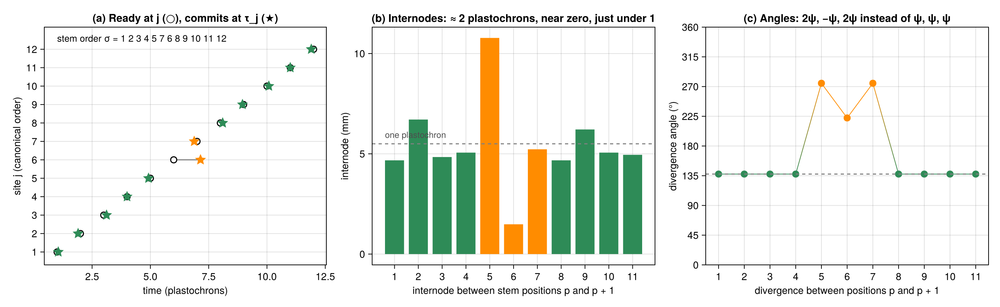

1. The problem
1.1 Organs on a spiral
At the tip of a growing shoot, the meristem makes new organs one after the other. Each new organ (a primordium) appears where the auxin field allows it, away from the youngest organs, which inhibit their surroundings (Reinhardt et al., 2003; Shi and Vernoux, 2019). This rule is enough for a regular pattern. In Arabidopsis the flowers follow a spiral, two successive flowers being separated by the divergence angle $\psi \approx 137.5^\circ$, the golden angle. Some plants follow a rarer spiral of $\approx 99.5^\circ$ (the Lucas angle), and the spiral turns clockwise or counter-clockwise depending on the plant.
The stem keeps a record of this process. Once initiated, the organs are carried upwards by the growth of the stem and stay in place. Going up a mature stem reads the history of the meristem, one organ per plastochron (the time between two initiations).
1.2 A swap and its signature
The record is often disturbed: two organs initiated close in time can end up inverted along the stem (Besnard et al., 2014; Refahi et al., 2016). Their positions on the spiral are correct, but the organ of the later site sits below that of the earlier one.
Number the sites of the spiral $j = 1, 2, \dots$ in spiral order (the canonical order); site $j$ sits at the angle $(j - 1)\psi$. If organ $p$ (counted from the bottom) comes from site $\sigma(p)$, the divergence between heights $p$ and $p + 1$ is $(\sigma(p + 1) - \sigma(p))\,\psi$. In a perfect stem $\sigma(p) = p$ and every divergence is $\psi$. Swap the organs of sites 6 and 7, and heights 5 to 8 hold sites 5, 7, 6, 8: the three divergences around the swap become
\[(7 - 5)\psi = 2\psi,\qquad (6 - 7)\psi = -\psi,\qquad (8 - 6)\psi = 2\psi .\]
A swap leaves a signature spanning three divergences (figure 1c), and every permutation leaves its own.

Figure 1. How a timing event becomes a permutation. (a) Site $j$ becomes ready at time $j$ (circles, in plastochrons) and commits after a random delay (stars); sites 6 and 7 (orange) commit in inverted order. (b) The internodes around the inverted pair, for a stem growing at a steady pace: about two plastochrons, nearly zero, just under one. (c) The divergences: $2\psi$, $-\psi$, $2\psi$ instead of $\psi, \psi, \psi$.
1.3 Why the order cannot simply be read off
With exact angles, the order could be read from the divergences. Real angles are blurred in three ways:
- noise: each azimuth is off by several degrees, more on some stems than on others;
- an unknown spiral: the angle of the first site, the orientation and the divergence (golden or Lucas) differ from stem to stem, and are not measured;
- twist: many stems twist as they elongate, slowly rotating the organs higher up.
So a divergence of $170^\circ$ may be a noisy $\psi$, or part of a swap seen through noise. One organ cannot decide; the whole stem can. An order is plausible if it explains all the angles at once, with one spiral, one noise level and one twist. A careful answer therefore weighs every possible order of the stem by how well it explains the angles, and there are many: $45! \approx 10^{56}$ for a stem of 45 organs.
1.4 The question behind the order
The order matters for what it says about the meristem. Here is the simplest mechanism that produces swaps:
- assumption — the sites become ready at a regular pace: site $i$ at time $i$, in plastochrons;
- assumption — each site then commits to become an organ after a random delay $e_i$, independently of the others, with the same law $f$ for every site;
- assumption — the organs appear on the stem in the order of commitment.
Site $i$ commits at $\tau_i = i + e_i$, and the order on the stem ranks these times (figure 1a):
\[\sigma = \operatorname{sortperm}(\tau_1, \dots, \tau_n),\qquad \tau_i = i + e_i,\qquad e_i \overset{\text{iid}}{\sim} f .\]
Everything about the mechanism is in the delay law $f$. A narrow $f$ (sd well below one plastochron) gives rare swaps between neighbours; a wide one, frequent and longer-range permutations. A tail, a few sites committing much later than the others, gives a distinctive pattern: one organ displaced by two or three positions. The goal of the package is to estimate $f$ from the angles.
1.5 The plan
The angles depend on $f$ only through the order, so the likelihood of a delay law is
\[p(y \mid f) = \sum_{\sigma} P_f(\sigma)\, p(y \mid \sigma),\]
with $P_f(\sigma)$ the probability of the order under the delay law, and $p(y \mid \sigma)$ that of the angles given the order (spiral, noise and twist integrated out). Three questions follow:
- What is $p(y \mid \sigma)$? A model of the angles given the order (§2).
- How can one sum over $10^{56}$ orders? Easily, provided $P(\sigma)$ is a product of one term per organ, each depending only on the organ's height and site (§3).
- Does $P_f$ have that form? Not exactly: whether site $i$ precedes site $j$ depends on both of their delays, which ties every position to all the others. A product can approach $P_f$, not reproduce it (§5.3).
So $p(y \mid f)$ cannot be computed by the easy sum. The way around is to fit an order law $A$ that does have the product form and is flexible enough to follow the data. $A$ tells exactly which orders are plausible for each stem, and gives samples of them; a good delay law should give these orders a high probability. This intuition is exact: since $A$ and $f$ describe the angles in the same way and differ only in the law of the order (§5.5),
\[\frac{p(y \mid f)}{p(y \mid A)} = \mathbb{E}_{\sigma \sim p(\sigma \mid y, A)}\left[\frac{P_f(\sigma)}{P_A(\sigma)}\right].\]
This is the two-step plan of the package:
| step | model | what it gives | pages |
|---|---|---|---|
| 1 | the propensity model $A$: a free cost for each displacement, in product form | the exact posterior of the order of each stem, with its spiral, noise and twist | §2–4 |
| 2 | commitment timing: the delay law $f$ | $\log p(y \mid f) - \log p(y \mid A)$, hence a fit of $f$ and tests between laws | §5 |
Data. For each stem, from the bottom to the top (heights $p = 1, \dots, n$):
| measurement | symbol | used for |
|---|---|---|
| absolute azimuth of each organ (radians) | $y_p$ | the likelihood |
| internode lengths (mm), optional | $\ell_p$ | the coordinate of the twist (§2.3) |
| daily counts of open flowers, optional | $c(\text{day})$ | the plastochron in hours (Plastochron) |
The models use absolute azimuths rather than divergences $y_{p+1} - y_p$: a misplaced organ then changes one observation instead of two, and the observations given the order are independent.